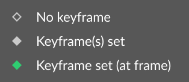

控件行 - 交互
简介
每个图层都由若干属性组成，其数值可以设置关键帧，也可以与其他数值建立连接。在界面中，一个属性由两个元素组成：一个 Control Row 和一个 Control。Control Row 是整行属性，可以包含多个 Controls（[x, y]、[r, g, b] 等）。
当光标置于某个 Control Row 上时，会有若干界面元素出现/高亮。
设置控件数值
要设置 Control：
- 将光标悬停在 Control 上。
- 单击。
- 输入数值。

Controls 也可以通过“拖动”来设置。
- 将光标悬停在 Control. 上。
- 单击并按住。
- 将光标向左或向右移动。

请注意，当光标到达显示器边缘时，拖动数值可能会受到限制。要避免这种情况，请在偏好设置窗口中启用“Infinite Scrubbing”。
设置 Double2/Double3 控件：
对于包含多个字段的控件行（例如 Position X 和 Y），在拖动或提交数值时按住 Option/Alt，可同时影响所有字段。
设置多个图层：
要同时为多个具有相同属性的图层设置数值：
- 将一个图层载入属性编辑器。
- 在场景树中选中所有其他要更新的图层。
- 在属性编辑器中更新相应属性。
用 Tab 切换到下一个控件：
使用 ⇥（Tab 键）将焦点移到下一个控件，或使用 Shift + ⇥ 将焦点移到上一个控件。请注意，macOS 用户可能需要设置一项偏好设置才能使用此功能。具体操作如下：
- 打开“System Settings...”。
- 进入“Keyboard”。
- 启用“Keyboard navigation”。
根据 Function Keys 偏好设置的不同，可以使用快捷键 control + F7 或 fn + control + F7 来开启/关闭此设置。
约束比例
某些 int2 控件还带有约束两个数值比例的功能。

当 Constrain Proportions 按钮启用（呈绿色）时，更改任一维度都会保持两个数值原有的宽度与高度比例。例如，如果一个 Rectangle 的 Width 为 100、Height 为 200，将 Width 增加到 200 会使 Height 按比例增加到 400（保持 1:2 的比例）。
内联表达式
可以在控件内编写简单的数学表达式。例如，输入 12*3 得到 36。
设置关键帧
要设置关键帧：
- 将光标悬停在 Control 上。
- 该 Control 中会出现一个小菱形轮廓图标。
- 将光标移到该图标上方并单击。
- 图标会变为绿色填充，表示已设置关键帧。

为 Double2/Double3 控件设置关键帧：
对于包含多个控件的控件行，在单击时按住 Option/Alt，即可在所有控件上创建关键帧。
关键帧图标有三种状态：

- No keyframe：表示该控件上没有任何动画。
- Keyframe Set：表示该控件上已设置动画。
- Keyframe Set（在当前帧）：表示该控件在当前时间轴帧上已设置动画。
Cavalry 默认开启 Auto Key。这意味着一旦设置了关键帧，对控件中数值的任何更改都会创建新的关键帧；如果播放头与已有键帧处于同一帧，则会更新该关键帧。
也可以使用控件行的右键菜单设置关键帧。
- 将光标悬停在控件行上。
- 右键单击以调出右键菜单。
- 选择“Set Keyframe”可在所有通道上创建关键帧。要在单个通道上创建关键帧，请选择窗口右侧对应的通道。

也可以用完全相同的方式在此窗口中执行 Delete Keyframes。
要删除某个属性/通道上的所有关键帧，请使用 Delete Animation 选项。
信息：
如果时间轴位于与某个关键帧相同的帧上，使用 Cmd/Ctrl + 单击可删除该关键帧。
右键菜单
右键单击控件行会打开一个菜单，其中的选项取决于该行的类型以及它是否包含连接：
- Set Keyframe：在当前帧为属性设置关键帧。如果某个属性行包含多个控件（例如 int2 或 double2），请选择对应的控件，或单击该行以为所有控件创建关键帧。
- Delete Keyframe：删除当前帧上的关键帧。如果某个属性行包含多个控件（例如 int2 或 double2），请选择对应的控件，或单击该行以删除所有控件的关键帧。
- Delete Animation：删除所有关键帧。如果某个属性行包含多个控件（例如 int2 或 double2），请选择对应的控件，或单击该行以删除所有控件的所有关键帧。
- Disconnect Input：移除输入连接。如果某个属性行包含多个控件（例如 int2 或 double2），请选择对应的控件，或单击该行以删除所有控件的连接。
- Duplicate and Replace：复制输入连接所指向的图层，并用新图层替换该连接。
- Reset Attribute to Default：若属性的数值已被更改，将其恢复为默认值。
- Rename...：自定义属性的名称。
- Edit Limits...：自定义可输入的数值范围。参见 Edit Limits...。
- Delete Selected Attributes：删除数组图层（值数组、颜色数组 等）中选中的索引。
- Reorder：重新排列数组图层（值数组、颜色数组 等）中索引的顺序。
- Add Expression：参见 Attribute Expressions。
- Add to Control Centre：将选中的属性添加到控制中心。
- Add Pre-Comp Override：为选中的属性添加 Pre-Comp Override。
- Control with Null：创建一个 空对象，并将其 Position 连接到选中的属性。
- Add Behaviour：选择一个行为，创建它并将其 Id 连接到选中的属性。
- Add Array：选择一个 Array，创建它并将其 Id 连接到选中的属性。
- Add Math/Script：选择一个 Math 或 JavaScript Layer，创建它并将其 Id 连接到选中的属性。
- Add Utility：选择一个工具，创建它并将其 Id 连接到选中的属性。
- Set Selected Attributes：用最后选中的属性的数值设置所有选中的属性。使用 Cmd/Ctrl 可选择多个属性。
- Set Selected Layers：将任何包含此属性的选中图层设置为该数值。例如，在场景树中选中 3 个图形，然后右键单击其中一个的 Position。
- Copy Value：将选中属性的数值复制到剪贴板。
- Copy Layer Id：将图层的 Id 复制到剪贴板，以便在脚本中使用。
- Copy Scripting Path：将属性的路径复制到剪贴板，以便在脚本中使用。请注意，这些路径区分大小写。
- Copy Generator Type：将生成器的类型复制到剪贴板，以便在脚本中使用。
- Paste Values：将复制到剪贴板的数值粘贴到选中的属性。请注意，数据类型必须匹配。
- Reveal Generator：将生成器（例如 Primitive Type、Distribution、Noise Type 等）显示在场景树中，以便与其他图层连接。请注意，生成器一旦显示，就无法再从场景树中隐藏。
属性表达式
Expressions 可以添加到带输入连接的属性上，对数值执行数学运算。与控件自带的内联表达式不同，这些表达式会被记住，并在每次属性数值变化时运行。表达式还会随场景一起保存。

信息：
属性表达式只能添加到带输入连接的属性上。要在控件内执行简单的一次性计算，请使用内联表达式。
运算顺序：
当一个属性的输出值连接到另一个属性的输入时，该输入值会在计算属性表达式之前转换为输入属性的数据类型。
例如，输出值
2.34在计算表达式之前，如果连接到 int（如复制器的 Count）会转换为2，如果连接到 bool（如复选框）会转换为1。
设置属性表达式
要设置属性表达式：
- 创建一个 Rectangle
- 连接
position.x→rotation.z - 右键单击 Rotation。
- 选择 Add Expression...。
- 输入
* 2 - 按 Enter。
- 拖动 Position X。
Position X 的数值会传递给 Rotation，并由该表达式加倍。例如，Position X 的数值为 120 时，Rotation 的结果为 120 * 2 = 240
有效表达式的示例：
*2：乘以 2/3：除以 3%100：对 100 取模^2：计算 2 次方+10：加 10sqrt(9)：9 的平方根
也可以在属性表达式中使用传入的数值。使用字符串 value 引用输入的数值。有效表达式的示例：
-(value)：将输入的数值从负值变为正值（或相反）。sqrt(value)：计算输入数值的平方根。如果输入值为 9，结果为 3。clamp(-45, value, 45)：即使输入的数值超出范围，也将输出值限制在不低于 -45 且不高于 45。round(value/10)*10：将输入数值四舍五入到最接近的 10。round(value)默认四舍五入到最接近的整数。if(value < 0, 0, value)：如果输入的数值小于 0，返回 0，否则返回输入的数值。
有关更多可用选项，请参见 ExprTk。
编辑属性表达式
表达式创建后，可以使用属性控件行上的 π 按钮进行编辑或移除。
-
要禁用表达式：单击
π按钮打开表达式窗口，然后取消勾选相应属性。 -
要清除/移除表达式：单击
π按钮打开表达式窗口，然后删除表达式或单击x。
Edit Limits...
可以将属性设置为接受自定义的数值范围。这主要用于作为组件或预合成覆盖 一部分的属性。
右键单击属性并选择 Edit Limits...，即可定义以下属性：
- Hard Minimum：字段数值不能低于的值。
- Hard Maximum：字段数值不能高于的值。
- Soft Minimum：字段在拖动时会停留的最小值，但可以通过手动输入数值覆盖。
- Soft Maximum：字段在拖动时会停留的最大值，但可以通过手动输入数值覆盖。
- Step：拖动数值或使用 ⬆︎ ⬇︎ 键时数值增加/减少的增量
请注意，由 Cavalry 定义了 Hard Minimum 或 Hard Maximum 的属性无法覆盖。例如，图形的 Opacity 由 Cavalry 设为 0..100，因此不能将其设置为 -20..120 这类超出默认范围的值。
软限制：
软限制应视为参考。如果手动将数值设置到软限制之外，该限制会被移除，直到数值重新设置回限制范围内。
对于只有单个数值的数值型属性，设置 Hard Minimum 和 Hard Maximum 后，下次将该界面载入属性编辑器时，界面会更新为 Slider。
所有限制都会随文件保存，并且是“按属性”生效的，也就是说，编辑某个椭圆的半径不会影响其他椭圆图形，只会影响你正在编辑的这一个。
编辑 Double2 属性（例如 Pivot）会同时编辑 X 和 Y 属性。目前无法单独设置 pivot.x 和 pivot.y 等。
现有数值：
如果现有数值超出所定义的限制，那么在提交限制后，该数值会被更新为限制范围内的值。请注意，这可能会改变你的合成。